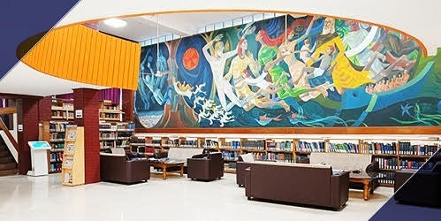

Nalanda Classroom Complex

The Nalanda Classroom Complex at IIT Kharagpur stands as a modern architectural marvel, embodying the institute's commitment to fostering an innovative educational environment. Equipped with state-of-the-art facilities, it serves as a central hub for various academic activities and interactive learning. The complex features spacious classrooms, well-equipped with advanced audio-visual technology, promoting an interactive and engaging learning experience. Designed to accommodate a large number of students, Nalanda Complex is a testament to IIT Kharagpur's dedication to providing world-class education and nurturing the minds of future leaders and innovators. Its contemporary design not only complements the academic atmosphere but also adds to the aesthetic beauty of the campus, making it a prominent landmark within the institute.
TSG Gymkhana

The Technology Students' Gymkhana at IIT Kharagpur is the nerve center of all student activities on campus, playing a pivotal role in shaping the extracurricular landscape of the institute. This dynamic facility is a melting pot of cultural, sports, and social activities, offering students an extensive range of opportunities to explore and excel beyond academics. The Gymkhana is equipped with modern sports facilities, various cultural clubs, and spaces for meetings and events, fostering a vibrant student community. It serves as a crucial platform for personal growth and development, encouraging students to pursue their passions, develop leadership skills, and engage in a healthy, active lifestyle. As a symbol of student unity and creativity, the Technology Students' Gymkhana is integral to the holistic development of students at IIT Kharagpur, making it a cherished and vital part of campus life.
Central Library
The Central Library at IIT Kharagpur is a cornerstone of academic life, representing a rich reservoir of knowledge and an essential resource for students, faculty, and researchers. As one of the largest and most prestigious academic libraries in India, it boasts an extensive collection of books, journals, and digital resources across a wide range of disciplines. This architecturally impressive building is more than just a repository of books; it's a state-of-the-art learning center equipped with modern facilities, including digital libraries, quiet study areas, and collaborative spaces. The Central Library stands as a symbol of IIT Kharagpur's commitment to academic excellence, providing an inspiring environment for intellectual exploration and discovery. Its comprehensive collection and advanced facilities make it a vital support system for the institute's scholastic pursuits, making it a key destination for anyone seeking knowledge and insight.